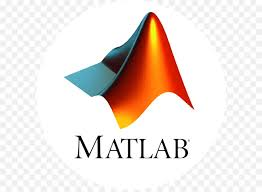

About Me
I am a final year Electrical and Computer Engineering student at the University of Cape Town. I was born in the United Kingdom and since the age of 2, I have lived the rest of my life in Cape Town, South Africa. I am writing my dissertation on a Software-Defined Radar demonstration.
Projects
Raspberry Pi Acoustic Triangulation
An array of 4 microphones is set up on a grid and the time delay on arrival of a sound source within the grid, 3 hyperbolic equations can be developed and solved to estimate the position of the sound source.
This project utilized 2 Raspberry Pi Zero W's and 4 Adafruit microphones. Python scripts are used to initiate data recording and transfer. A MATLAB script is used to solve the equations.
Neural Network Shape Recognition

A python GUI is used to both generate labelled data and classify test data. A Convolutional Neural Network is used to classify the shapes. The report details various approaches and validation methods to this problem.
Python libraries used for the CNN element of this project were PyTorch and sklearn.
Southern Yellow-Billed Hornbill Nest Temperature Data Retrieval
This details a system for measuring an array of temperature sensors inside the nestbox of the Southern Yellow-Billed Hornbill. The data is transmitted via LoRa to a mainbase where it can be easily accessed.
My role in this project was to program the ESP-32 microcontrollers to read in the temperature data and package, send and receive the data via a LoRa message.
Smoothing Filter implemented in HDL for FPGA
A smoothing filter removes the noise from an input signal to reveal the underlying signal. In terms of digital signal processing, this is implemented as a moving average filter. A variation on this, a Savitsky-Golay filter, is investigated.
My role in this project was to write the Verilog code for the moving average and Savitsky-Golay filter. I also implemented a curve fitting module using linear regression.
Power meter box for LEDWise
In November of 2021, I worked at LEDWise to sign off my vacation work requirements for UCT. LEDWise manufacture their own LED fittings and products. A piece of equipment used on the floor was a "power meter box" which was used for quality control testing every LED. I was tasked with designing and creating a box with various plug fittings that could measure and display the power, power factor, voltage and current.
DLMS Command-Line Interface for iPay
I worked part-time at iPay in 2023. I worked on a research product, developing a command-line interface used for programming and reading parameters from DLMS smart power meters. These meters are found in millions of homes in South Africa and many more across the world.
Skills
Programming Languages
 C/C++
C/C++ Python
Python Java
JavaHDL/Verilog
 Julia
Julia-  MATLAB
Areas of Expertise
- Analogue Electronics
- Embedded Systems
- HDL and FPGA
- Digital Signal Processing
- Radar
- Machine Learning
Interests
- Modular synthesisers
- Piano and guitar
- Gymming